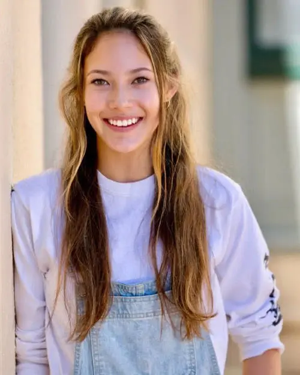

谷爱凌
谷爱凌（Gu Ailing），英文名Eileen Gu，2003年出生于美国加利福尼亚州圣弗朗西斯科，中国女子自由式滑雪运动员。
2019年8月16日，获得2019-20赛季自由式滑雪坡面障碍技巧新西兰公开赛的冠军；8月28日，获得2019年新西兰冬季运动会暨澳洲杯自由式滑雪U型场地赛冠军。
2020年1月，获得2020年洛桑冬季青年奥林匹克运动会滑雪U型池、自由式滑雪大跳台冠军，自由式滑雪女子坡面障碍技巧亚军；2月，获得2019-20赛季世界杯加拿大卡尔加里站U型场地冠军，坡面障碍技巧冠军；4月16日，荣膺国际雪联2019/2020赛季“最佳时刻”殊荣； 11月，谷爱凌荣登“2020福布斯中国30岁以下精英榜”；12月14日，谷爱凌宣布被斯坦福大学录取。
2021年3月17日，2021年自由式滑雪世锦赛大跳台决赛，中国选手谷爱凌凭借后两轮的出色发挥，以161.50分的成绩获得季军。首次征战世锦赛，就在女子U型场地、坡面障碍技巧、大跳台三项比赛中斩获2金1铜；3月22日，自由式滑雪世界杯阿斯本站U型池决赛结束，谷爱凌因肩伤退赛，结束本赛季争夺 ；12月18日，2021年Dew Tour露水巡回赛自由式滑雪女子坡面障碍技巧决赛，中国选手谷爱凌以89分获得亚军 。2021年12月，获得2021年中国十佳运动员荣誉。

